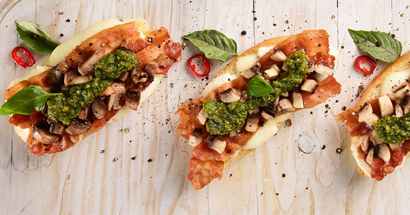
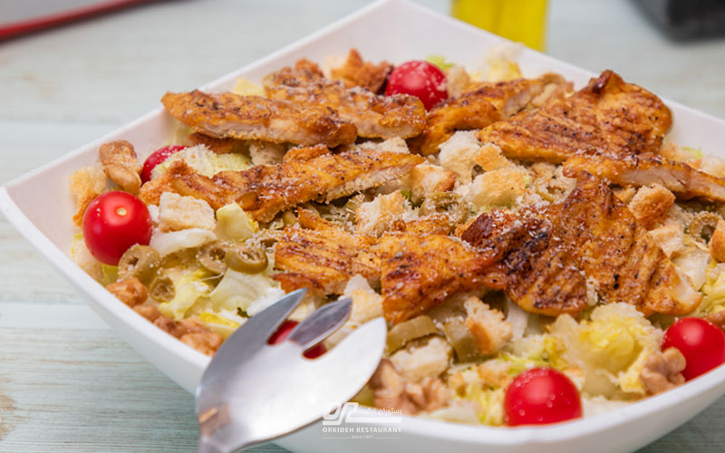
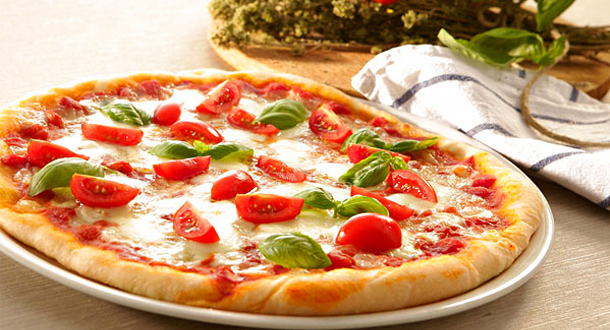
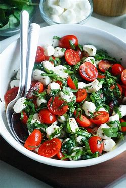
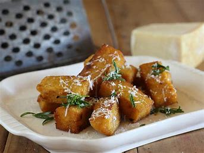

Chicken Bruschetta

Crispy toasted bread topped with fresh tomatoes and basil
Chicken Bruschetta
Ingredients:
- Toasted bread
- Grilled chicken
- Fresh basil
- Tomatoes
- Garlic
Directions:
Toast the bread, grill the chicken, and top with basil, tomatoes, and garlic.
Caesar Salad

A fresh and colorful combo of mozzarella, tomato & basil.
Caesar Salad
Ingredients:
- Romaine lettuce
- Croutons
- Parmesan cheese
- Caesar dressing
Directions:
Toss the lettuce with croutons, cheese, and Caesar dressing.
Margherita Pizza

A timeless Italian pizza with tomato, mozzarella & fresh basil.
Margherita Pizza
Ingredients:
- Pizza dough
- Tomato sauce
- Mozzarella cheese
- Fresh basil
Directions:
Spread the sauce on the dough, add cheese, and bake. Top with basil.
Caprese Salad

Experience the refreshing harmony of juicy tomatoes, creamy mozzarella, and fragrant basil — a true taste of Italy.
Caprese Salad
Ingredients:
- Fresh mozzarella
- Ripe tomatoes
- Fresh basil leaves
- Extra virgin olive oil
Directions:
Slice the tomatoes and mozzarella, layer them with basil leaves, and drizzle with olive oil. Add salt and pepper to taste.
Polenta Bites

Golden, crispy, and packed with flavor — perfect for snacking or sharing with friends.
Polenta Bites
Ingredients:
- Cornmeal (Polenta)
- Water or vegetable broth
- Grated Parmesan cheese
- Salt, pepper, herbs (optional)
- Optional toppings: mushrooms, pancetta, or cheese
Directions:
Cook the polenta until thick, stir in cheese and seasonings. Spread in a tray to set, cut into bites, then bake or pan-fry until golden.
Garlic Bread
.jfif)
Buttery, garlicky, and irresistible — a comforting side dish to complement any meal.
Garlic Bread
Ingredients:
- Bread (French or Italian)
- Fresh garlic, minced
- Butter
- Fresh parsley (optional)
- Salt and pepper
Directions:
Mix minced garlic, butter, parsley, salt, and pepper. Spread the mixture on sliced bread. Toast in the oven until golden and crispy.